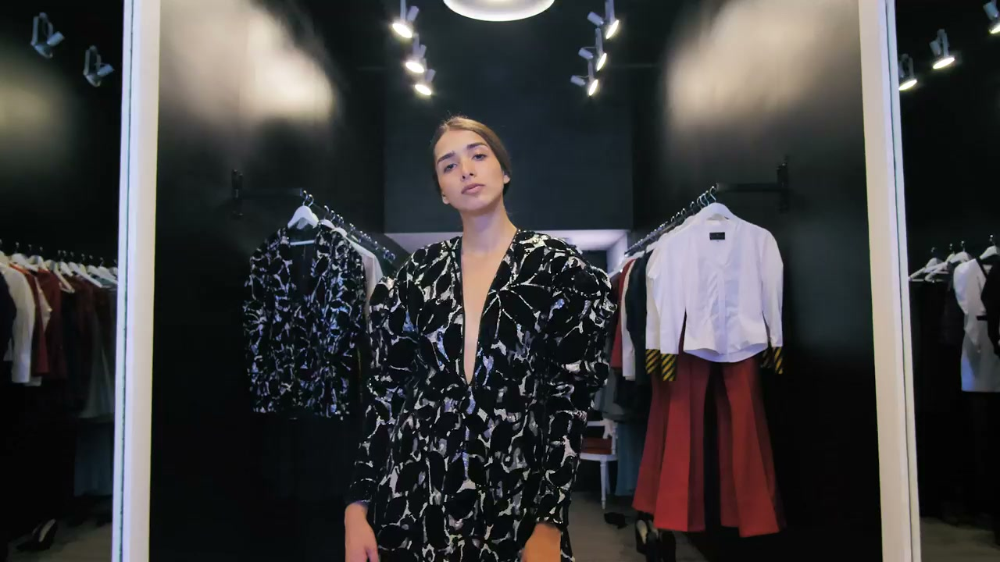
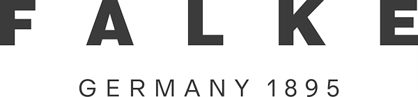
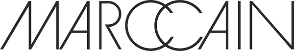
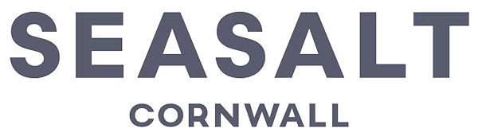
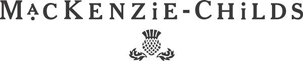
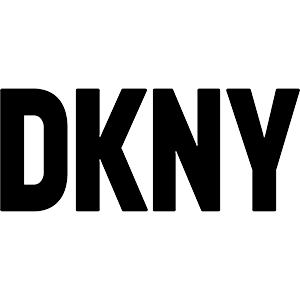
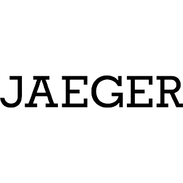

01

Fashion · Lifestyle · Interiors PR
For over 15 years we have connected fashion, accessories, beauty and interiors brands with the editors, journalists and influencers who shape culture — across London, Munich & Berlin.
Trusted by






Who we are
We are an independent fashion, lifestyle & interiors PR agency securing consistent, meaningful coverage that positions brands as authoritative voices within their sectors.
Years experience
Brands represented
Markets · UK & DE
Integrated services
What we do
Twelve disciplines working as one strategy — not separate teams.


London & Germany
Our story
TASK PR is the brainchild of Tamara Kretzer and André Schlagowski, who launched the agency in 2011 with one goal — a bespoke, personal service that keeps each client's needs the number-one priority, every single day.
With in-house heritage across Diesel, Mango, Debenhams and Thomas Sabo, our London and German teams deliver strategic PR, digital and social campaigns across accounts from Marc Cain and Falke to Maurice Lacroix and Graduate Fashion Week — backed by a network reaching the USA, Italy, Spain, France and Scandinavia.
Co-founder
Co-founder
TASK PR consistently delivers coverage that moves the needle. Their relationships with editors are genuinely second to none in the industry.
Marketing Director
Thomas Sabo UK
News & events

News
TASK PR was delighted to support sofa.com at the recent Ideal Home Awards in London, where the brand received two major accolades.
Read more →
June 2, 2026

Events
During London Craft Week, TASK PR supported Really Wild Clothing in hosting an evening celebrating the heritage and modern evolution of tweed.
Read more →
May 21, 2026

News
Why earned media and PR matter more than ever in an era of AI-driven discovery — and how brands can stay ahead of the shift.
Read more →
May 13, 2026
Let's talk
Tell us about your brand and let's explore what TASK PR can build for you across the UK and German markets.
Book a discovery call